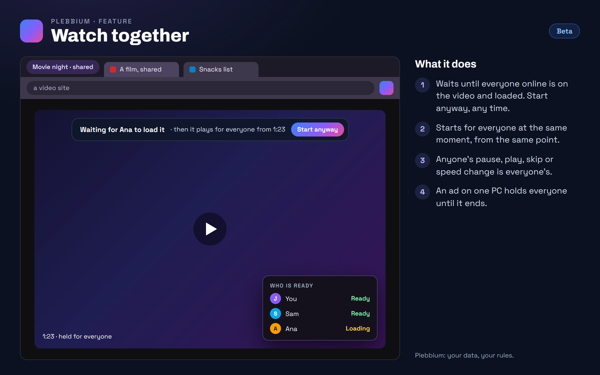

All features › In Beta › Watch together
Watch together
Betasince features 0.9.0Press Watch together on a YouTube video in a shared workspace: it holds for everyone until all are on it and loaded, starts for all at the same moment, and from then on anyone's pause, skip or speed change happens for everyone.

How to use it
- Open a YouTube video in a shared workspace and press Watch together on the player.
- The others get a notice: Go there takes them to the video. The card on the player says who is ready, loading or not on the tab yet.
- When everyone online is ready it plays for all. Start anyway starts it without waiting.
- Pause, play, skip or change the speed: it happens for everyone, with a note saying who did it.
- The Watching together pill: Leave to watch on your own, or Stop for everyone.
When it arrived
Features 0.9.0Beta 26 Oct 2026 · not on Stable yet
Watch together on YouTube videos in shared workspaces.
Why it works this way
One moment for everyone
Each change says where the video was at one moment on the relay's clock, so every PC works out the same position however long the message took to arrive, and quietly catches up when it drifts.
Only the play and pause go between you
Play, pause, the position, the speed and who is ready are locked on your PC like everything else in a shared workspace. The relay passes them on without being able to read them, and keeps none of it.
Nothing plays where nobody looks
Ready means on the video with it loaded, so a tab in the background never starts playing by itself. Someone who comes later joins at the same point.